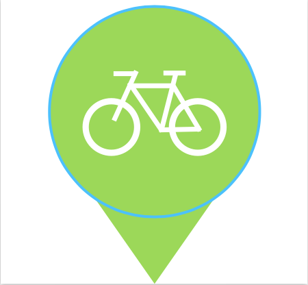
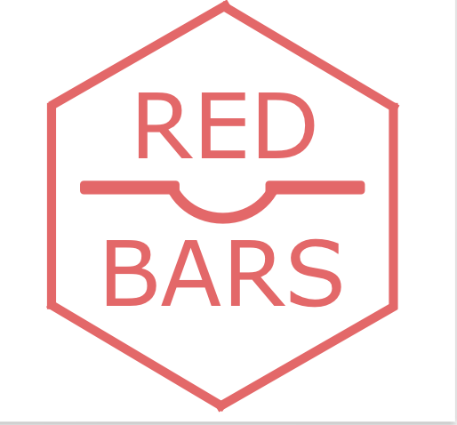
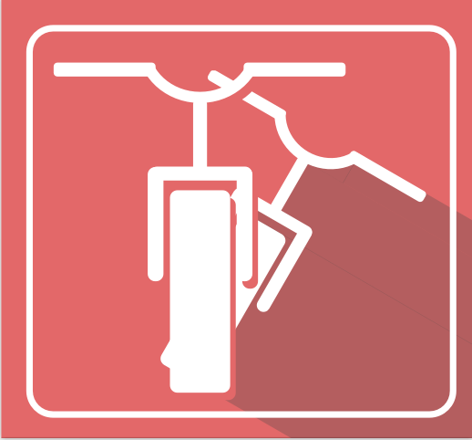
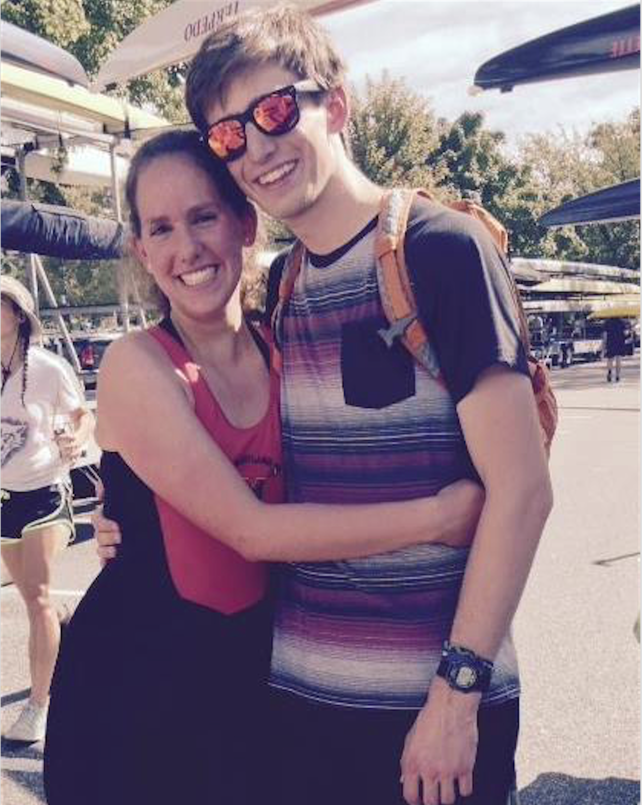

<!DOCTYPE html><html lang="en" class="demo-1 no-js"><head><meta charset="utf-8"><meta http-equiv="X-UA-Compatible" content="IE=edge"><meta name="viewport" content="width=device-width, initial-scale=1, user-scalable=0, maximum-scale=1.0"><title>Kyle King</title><meta name="description" content="Student entrepreneur working in microfluidics and medical devices"><meta name="keywords" content="student, software, University of Maryland, Kyle King, intern, junior, medical devices, resume"><meta name="author" content="Kyle King"><link href="http://fonts.googleapis.com/css?family=Lusitana:400,700" rel="stylesheet" type="text/css"><link href="http://fonts.googleapis.com/css?family=Merriweather:400,300,300italic,400italic,700,700italic,900,900italic" rel="stylesheet" type="text/css"><link href="http://fonts.googleapis.com/css?family=Merriweather+Sans:400,300,300italic,400italic,700italic,700,800,800italic" rel="stylesheet" type="text/css"><link rel="stylesheet" href="normalize.css"><link rel="stylesheet" href="/tmp/styles/style.css"><script src="snap.svg-min.js"></script></head></html><body><div class="hero"><div id="heroUnit" class="hero-inner"><div class="hero-copy"><h1 class="big">Kyle King</h1><p class="large">College, Projects, and Startups</p></div></div></div><div id="Container"><section id="projectPics" class="projectPics clearfix"><h1 class="cntr">Physical</h1><a href="#" data-path-hover="m 180,34.57627 -180,0 L 0,0 180,0 z"><figure><svg viewBox="0 0 180 320" preserveAspectRatio="none"><path d="M 180,160 0,218 0,0 180,0 z"></path></svg><figcaption><h2>Crystalline</h2><p>Soko radicchio bunya nuts gram dulse.</p><button>View</button></figcaption></figure></a><a href="#" data-path-hover="m 180,34.57627 -180,0 L 0,0 180,0 z"><figure><svg viewBox="0 0 180 320" preserveAspectRatio="none"><path d="M 180,160 0,218 0,0 180,0 z"></path></svg><figcaption><h2>Cacophony</h2><p>Two greens tigernut soybean radish.</p><button>View</button></figcaption></figure></a><a href="#" data-path-hover="m 180,34.57627 -180,0 L 0,0 180,0 z"><figure><svg viewBox="0 0 180 320" preserveAspectRatio="none"><path d="M 180,160 0,218 0,0 180,0 z"></path></svg><figcaption><h2>Languid</h2><p>Beetroot water spinach okra water.</p><button>View</button></figcaption></figure></a><a href="#" data-path-hover="m 180,34.57627 -180,0 L 0,0 180,0 z"><figure><svg viewBox="0 0 180 320" preserveAspectRatio="none"><path d="M 180,160 0,218 0,0 180,0 z"></path></svg><figcaption><h2>Serene</h2><p>Water spinach arugula pea tatsoi.</p><button>View</button></figcaption></figure></a><a href="#" data-path-hover="m 180,34.57627 -180,0 L 0,0 180,0 z"><figure><svg viewBox="0 0 180 320" preserveAspectRatio="none"><path d="M 180,160 0,218 0,0 180,0 z"></path></svg><figcaption><h2>Nebulous</h2><p>Pea horseradish azuki bean lettuce.</p><button>View</button></figcaption></figure></a><a href="#" data-path-hover="m 180,34.57627 -180,0 L 0,0 180,0 z"><figure><svg viewBox="0 0 180 320" preserveAspectRatio="none"><path d="M 180,160 0,218 0,0 180,0 z"></path></svg><figcaption><h2>Iridescent</h2><p>A grape silver beet watercress potato.</p><button>View</button></figcaption></figure></a><a href="#" data-path-hover="m 180,34.57627 -180,0 L 0,0 180,0 z"><figure><svg viewBox="0 0 180 320" preserveAspectRatio="none"><path d="M 180,160 0,218 0,0 180,0 z"></path></svg><figcaption><h2>Resonant</h2><p>Chickweed okra pea winter purslane.</p><button>View</button></figcaption></figure></a><a href="#" data-path-hover="m 180,34.57627 -180,0 L 0,0 180,0 z"><figure><svg viewBox="0 0 180 320" preserveAspectRatio="none"><path d="M 180,160 0,218 0,0 180,0 z"></path></svg><figcaption><h2>Zenith</h2><p>Salsify taro catsear garlic gram.</p><button>View</button></figcaption></figure></a><h1 class="cntr">Virtual</h1><a href="#" data-path-hover="m 180,34.57627 -180,0 L 0,0 180,0 z"><figure><svg viewBox="0 0 180 320" preserveAspectRatio="none"><path d="M 180,160 0,218 0,0 180,0 z"></path></svg><figcaption><h2>Crystalline</h2><p>Soko radicchio bunya nuts gram dulse.</p><button>View</button></figcaption></figure></a><a href="#" data-path-hover="m 180,34.57627 -180,0 L 0,0 180,0 z"><figure><svg viewBox="0 0 180 320" preserveAspectRatio="none"><path d="M 180,160 0,218 0,0 180,0 z"></path></svg><figcaption><h2>Cacophony</h2><p>Two greens tigernut soybean radish.</p><button>View</button></figcaption></figure></a><a href="#" data-path-hover="m 180,34.57627 -180,0 L 0,0 180,0 z"><figure><svg viewBox="0 0 180 320" preserveAspectRatio="none"><path d="M 180,160 0,218 0,0 180,0 z"></path></svg><figcaption><h2>Languid</h2><p>Beetroot water spinach okra water.</p><button>View</button></figcaption></figure></a><a href="#" data-path-hover="m 180,34.57627 -180,0 L 0,0 180,0 z"><figure><svg viewBox="0 0 180 320" preserveAspectRatio="none"><path d="M 180,160 0,218 0,0 180,0 z"></path></svg><figcaption><h2>Serene</h2><p>Water spinach arugula pea tatsoi.</p><button>View</button></figcaption></figure></a><a href="#" data-path-hover="m 180,34.57627 -180,0 L 0,0 180,0 z"><figure><svg viewBox="0 0 180 320" preserveAspectRatio="none"><path d="M 180,160 0,218 0,0 180,0 z"></path></svg><figcaption><h2>Nebulous</h2><p>Pea horseradish azuki bean lettuce.</p><button>View</button></figcaption></figure></a><a href="#" data-path-hover="m 180,34.57627 -180,0 L 0,0 180,0 z"><figure><svg viewBox="0 0 180 320" preserveAspectRatio="none"><path d="M 180,160 0,218 0,0 180,0 z"></path></svg><figcaption><h2>Iridescent</h2><p>A grape silver beet watercress potato.</p><button>View</button></figcaption></figure></a><a href="#" data-path-hover="m 180,34.57627 -180,0 L 0,0 180,0 z"><figure><svg viewBox="0 0 180 320" preserveAspectRatio="none"><path d="M 180,160 0,218 0,0 180,0 z"></path></svg><figcaption><h2>Resonant</h2><p>Chickweed okra pea winter purslane.</p><button>View</button></figcaption></figure></a><a href="#" data-path-hover="m 180,34.57627 -180,0 L 0,0 180,0 z"><figure><svg viewBox="0 0 180 320" preserveAspectRatio="none"><path d="M 180,160 0,218 0,0 180,0 z"></path></svg><figcaption><h2>Zenith</h2><p>Salsify taro catsear garlic gram.</p><button>View</button></figcaption></figure></a></section></div><script>(function() {

  function init() {
    var speed = 250,
      easing = mina.easeinout;

    console.log('yay');
    [].slice.call ( document.querySelectorAll( '#projectPics > a' ) ).forEach( function( el ) {
      var s = Snap( el.querySelector( 'svg' ) ), path = s.select( 'path' ),
        pathConfig = {
          from : path.attr( 'd' ),
          to : el.getAttribute( 'data-path-hover' )
        };
      el.addEventListener( 'mouseenter', function() {
        path.animate( { 'path' : pathConfig.to }, speed, easing );
      } );
      el.addEventListener( 'mouseleave', function() {
        path.animate( { 'path' : pathConfig.from }, speed, easing );
      } );
    } );
  }
  init();
})();</script><div id="Container" class="cntr"><h1>Get in Touch</h1><div class="FacebookIMG"><a href="#"><p>Facebook</p></a></div><div class="GithubIMG"><a href="#"><p>Github</p></a></div><div class="LinkedInIMG"><a href="#"><p>LinkedIn</p></a></div></div></body>